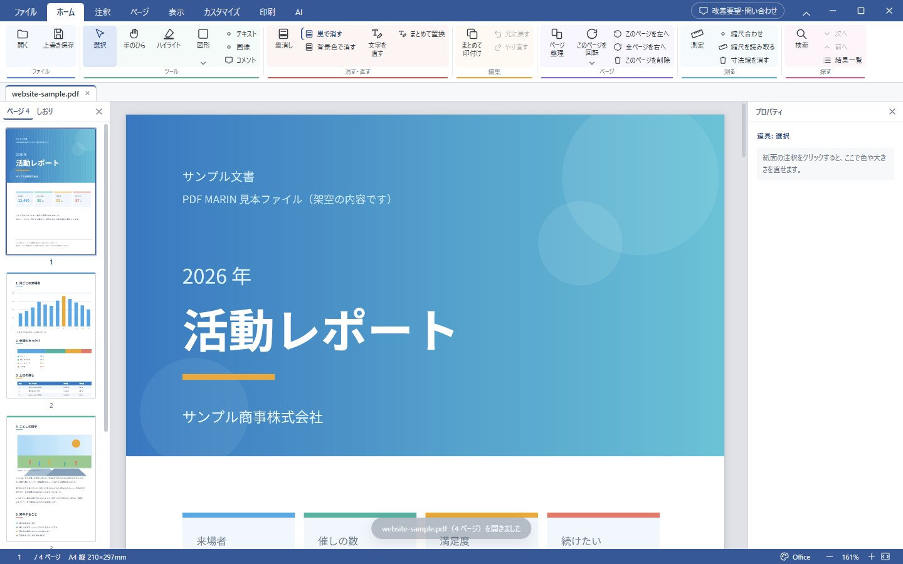

01 / ORGANIZE
ページを、思いどおりに。
必要なページを選び、順番や向きを整える。
書類をまとめる作業を、もっとスムーズに。
PDF MARIN for Mac 開発中
ページを整える。書き込む。読みやすくする。
使いやすいPDF編集を、Macにも。
Mac版は、ただいま開発中です。

画面を大きく見る01 — THE DIRECTION
Windows版で大切にしてきた使いやすさをもとに、
Mac版を開発しています。
必要なページを選び、順番や向きを整える。
書類をまとめる作業を、もっとスムーズに。
気づいたことをメモに残し、大切なところには印を。
PDFの上で、考えを分かりやすく伝える。
必要な道具が、必要なところに。
書類の確認に集中できる画面を目指して。
Mac版で目指している使い方のイメージです。対応機能は、決まり次第お知らせします。
02 — SHAPED BY YOU
PDF MARINは、使う人の声をもとに
少しずつ使いやすさを磨いているアプリです。
Mac版も、そんな作り方を大切に。
毎日の作業に寄り添う道具を目指します。
STAY IN THE LOOP
開発の進み具合は、公式Xでお知らせします。